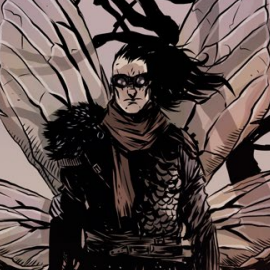
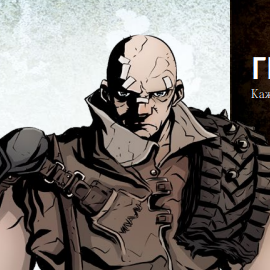
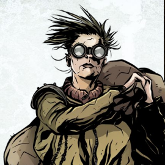
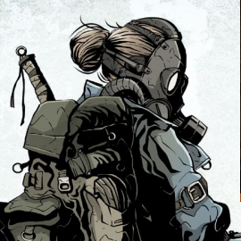
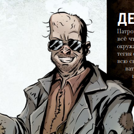
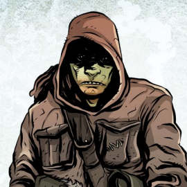
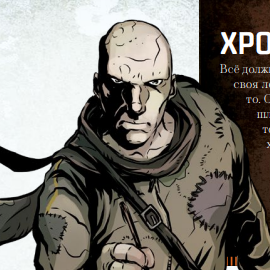
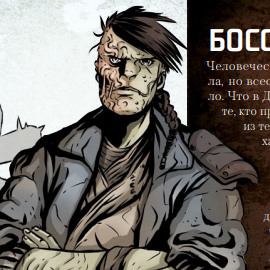
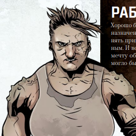

ПерсонажиТвой персонаж — твой мутант — это твой аватар, твои глаза и уши в мире игры «Мутанты. Точка отсчёта». Его жизнь и благополучие зависят от твоих решений. Подойди к этой роли серьёзно, действуй так, чтобы твой персонаж был похож на настоящего человека — в этом случае удовольствие от игры будет максимальным. Однако не перестарайся и не пытайся уберечь персонажа от малейшей опасности: цель игры — написать захватывающую историю, а для этого обязательно придётся рискнуть!
Создание персонажа
Возьми бланк персонажа и заполни все 12 пунктов:
Роль
Первое, что предстоит выбрать при создании мутанта, — это его роль. Именно роль определяет, кто ты и какое положение занимаешь в социуме Ковчега. Всего таких ролей восемь: Громила, Железячник, Разведчик, Делец, Собачник, Хронист, Босс, Раб. Лучше всего, если все игроки выберут для своих героев разные роли. Так группа получится более универсальной, а игра — более разнообразной.
Имя
В описании каждой роли ты найдёшь перечень из пяти мужских и пяти женских имён. Можешь выбрать одно из них или придумать своё.
Внешность
Опиши лицо, тело, а также свою одежду
Характеристики
Начальное значение любой характеристики равно нулю. Создавая персонажа, ты должен распределить 14 пунктов характеристик в пределах от 2 до 4 пунктов на каждую. Единственное исключение — ключевая для выбранной роли характеристика: в неё можно вложить до 5 пунктов. Характеристики: Телосложение, Ловкость, Смекалка, Эмпатия
Навыки
Начальное значение любого навыка равно нулю. Создавая персонажа, ты должен распределить 10 пунктов навыков. Ты можешь вложить до 3 пунктов в любой доступный твоему персонажу навык и обязан вложить хотя бы 1 пункт в специальный навык, соответствующий выбранной тобой роли. Помни, что значения навыков можно повышать в процессе игры. Подробнее в разделе про навыки.
Достоинства
Достоинства — это свойства, трюки и способности, которые дают тебе преимущество перед другими персонажами. По сравнению с навыками они значительно более узкоспециализированы, а если не брать в расчёт важные с точки зрения игровой механики подробности, основное призвание достоинств — дать тебе возможность ещё более полно раскрыть потенциал созданного тобой персонажа. Сами достоинства описаны на соответствующей страничке.
Мутация
Обычно в начале игры герой получает одну случайную мутацию — игрок должен либо вытянуть карту мутации, либо пройти проверку по таблице мутаций на соответствующей странице.
Взаимоотношения
Создавая своего персонажа, игрок должен указать, в каких отношениях его герой состоит с персонажами других игроков (одного короткого предложения для каждого из них будет вполне достаточно). Каждая роль подразумевает свой собственный набор вариантов таких взаимоотношений — ты можешь воспользоваться ими или придумать на их основе свои собственные
Мечта
Наконец, нужно выбрать для твоего персонажа мечту — что‑то, чего он желает сильнее всего на свете. Как и в случае с взаимоотношениями, каждой роли соответствует собственный набор таких желаний — ты можешь воспользоваться ими или придумать на их основе свои
Снаряжение
Начальное снаряжение: в описании каждой роли указано, с каким оружием и с каким запасом еды, воды и патронов ты начинаешь игру. Обрати внимание, что железячники также получают один случайный артефакт
Ковчег
Создать Ковчег — первое, что вам нужно сделать, когда все игроки определятся со своими персонажами. Этот несложный процесс состоит из нескольких этапов, которые описаны далее. Используйте копию бланка Ковчега из сайта или скачайте его
Берлога
Опиши свою берлогу
Классы персонажей

Громила
Ты выучил главный урок любого бойца: побеждает не тот, кто сильнее, а тот, кто не сдаётся.
Ты выучил главный урок любого бойца: побеждает не тот, кто сильнее, а тот, кто не сдаётся.

Железячник
Видок у твоих железяк, конечно, ещё тот, но они действительно делают своё дело…
Видок у твоих железяк, конечно, ещё тот, но они действительно делают своё дело…

Разведчик
Только ты знаешь Зону — безопасные пути, петляющие по этому кладбищу ушедшей эпохи.
Только ты знаешь Зону — безопасные пути, петляющие по этому кладбищу ушедшей эпохи.

Делец
Патроны? Еда? Вода? Рабы? Ты можешь достать всё что угодно.
Патроны? Еда? Вода? Рабы? Ты можешь достать всё что угодно.

Собачник
Ты уже даже не помнишь, как нашёл свою псину, но она значит для тебя больше, чем любой мутант.
Ты уже даже не помнишь, как нашёл свою псину, но она значит для тебя больше, чем любой мутант.

Хронист
Всё должно быть записано. У Народа должна быть своя летопись, и ничто не должно быть забыто.
Всё должно быть записано. У Народа должна быть своя летопись, и ничто не должно быть забыто.

Босс
Что в Древние времена, что сейчас — есть те, кто приказывает, и те, кто подчиняется.
Что в Древние времена, что сейчас — есть те, кто приказывает, и те, кто подчиняется.

Раб
Хорошо быть рабом — знать своё место, своё предназначение.
Хорошо быть рабом — знать своё место, своё предназначение.